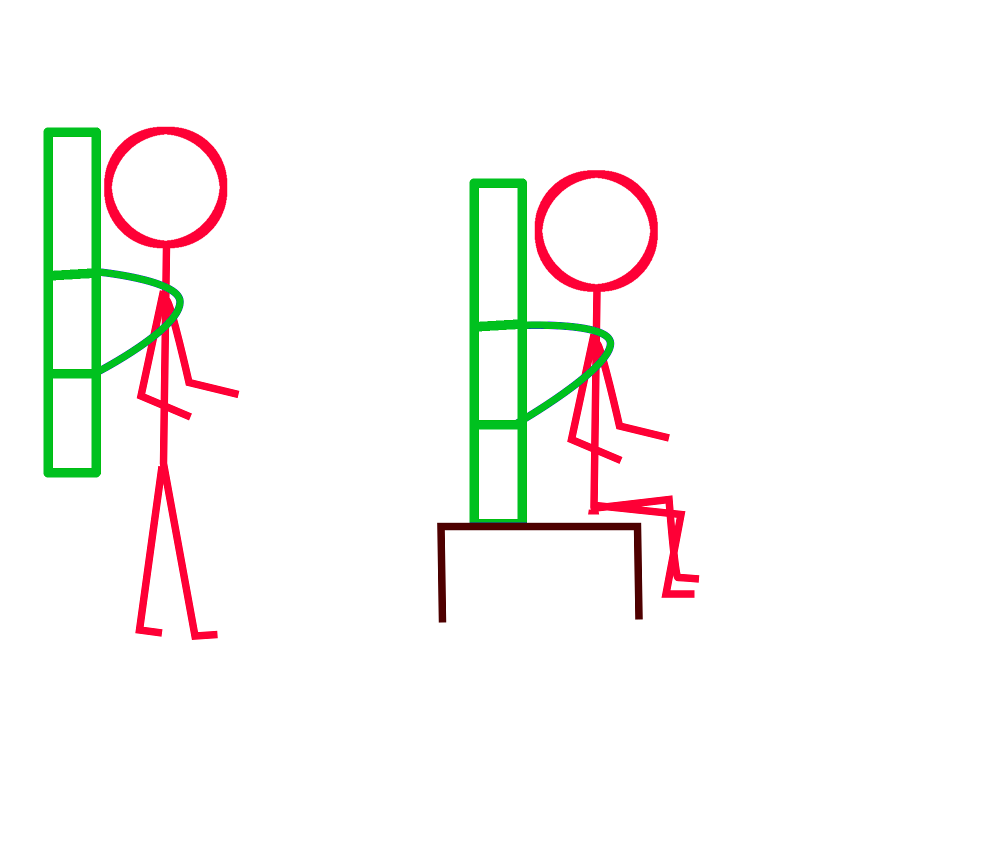

Introduction
Welcome to InstraLabs!
We are glad to show you how to use our patent pending strap
system, the Congo Case Carrier.
It is designed to help you carry your instrument case on your back,
just like backpack.
Components
Let’s briefly review the components. See the numbered components on pictures below.
There are two horizontal straps, upper(1) and lower(2)

And there are two vertical straps (3).
They run through the horizontal straps, and are adjustable.
By adjusting these strap adjustors (4), you control the position of
the case on your back.

If you tighten them, the case goes up(A). If you loosen them, the case goes down(B).
I like to have the bottom of the case level with your bottom, so that I can sit while carrying the case.
Note the buckles, which appear on the left sides of the horizontal straps. These two buckles allow you to easily access the interior of the case.

Note the sliders at the ends of the straps. They keep the straps nice and neat.
Also, let’s take a look at the other side of the Congo Carrier. Note the shoulder straps (6), the chest strap (7), and the handle (8).

Equipping
Attaching the straps to the case is really easy.
First, lean your case against something, like a table, upside down,
so that the heavy side is up.
Second, loosen the strap adjustors on the horizontal straps. Then place the Congo Carrier onto the case, like this.
Now, tighten the vertical strap adjustors so that the case will be level,
as described earlier.
The first time you attach, the height may not be right,
but the second time will be perfect.
Once you have the position established, tighten the horizontal strap adjustors.
Just tight enough to be comfortable snug against the case.
NOTE: It shouldn’t be too tight.
If you tighten horizontal straps too much, you may cause damage to the case.
Do not tight too strong. The sliders are protecting from over-tightening
the straps. They will break first to indicate you the straps are too tight.
Don't worry, we put a couple of extra sliders to the package.
Wearing
This is the best part.
- Lift the case by the shoulder straps or the handle onto a table.
- Orient the interior side toward you.
- Slip your arms through the shoulder straps.
The case should now sit comfortably on your back.
If it is too high or too low, adjust the vertical strap adjustors.
If it is too loose, adjust the horizontal strap adjustors.
Support of guitar-shape cases
For extra support, disconnect the chest strap and place at the bottom, like on the picture below.